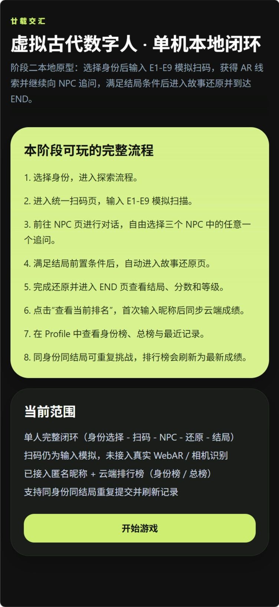
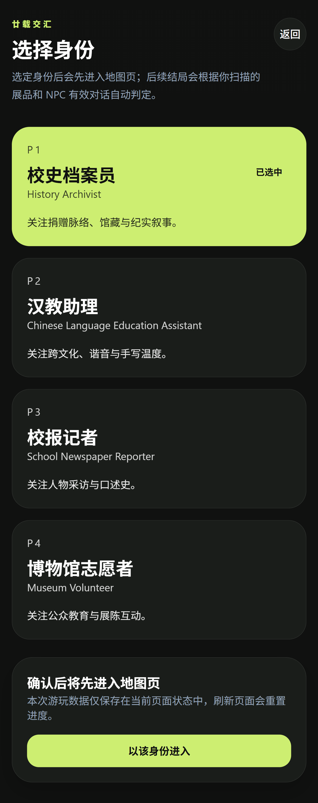
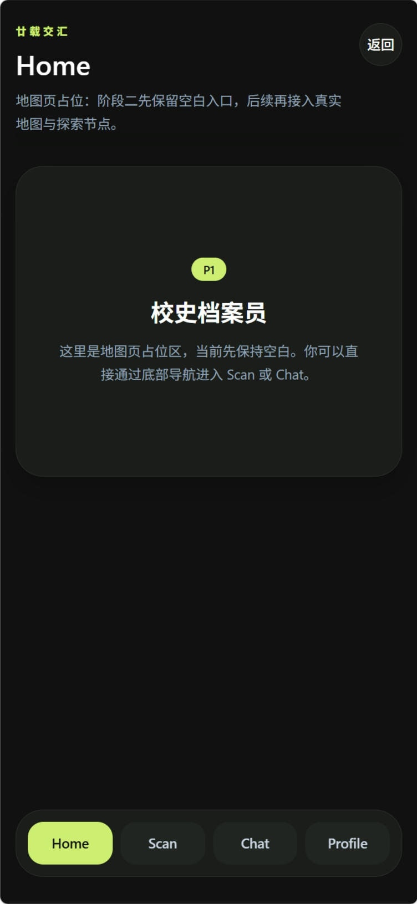
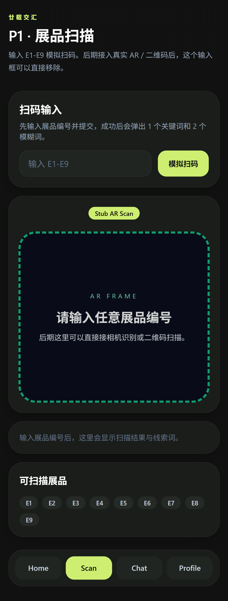
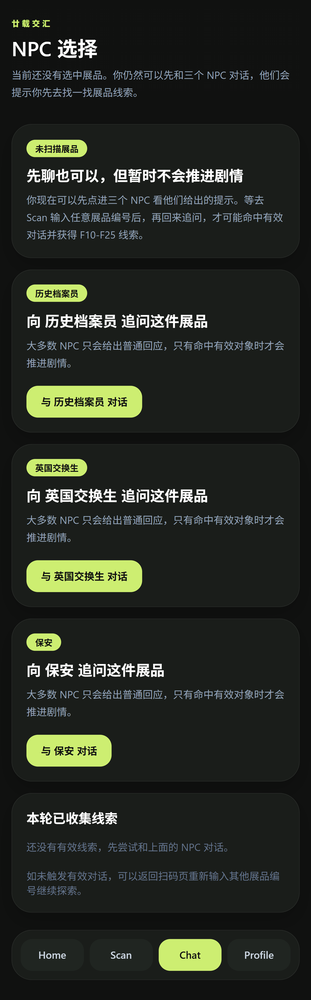
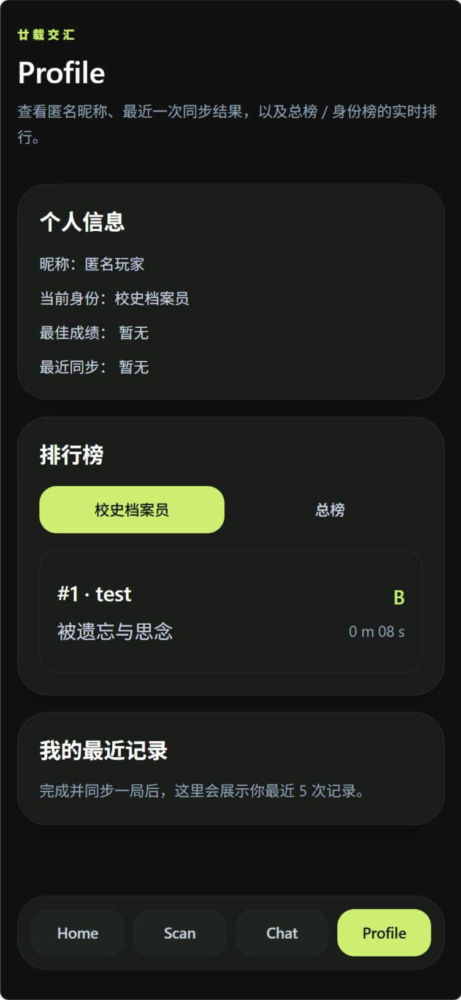

How iterative design refined usability, engagement, and immersion.
Iterative Refinement of Usability, Engagement, and Immersion
The development process was highly iterative, focusing on improving usability, engagement, and immersion. Early low-fidelity prototypes emphasized the core flow: scanning ? choosing a role ? interacting with NPCs ? collecting clues ? reconstructing the story. Feedback from internal tests informed adjustments to layout, navigation, and interaction clarity.
Mid-fidelity iterations refined NPC logic, dialogue branching, and interactive feedback, including evaluating different NPC selection approaches. This stage allowed the team to balance cognitive load, guidance, and user freedom. High-fidelity iterations integrated full AR functionality, bilingual UI, and real-time leaderboard, while enhancing visual appeal through hand-drawn NPCs and responsive design.
Each iteration cycle incorporated user feedback, analytics, and observation, enabling incremental improvements. Adjustments focused on AR scanning reliability, narrative clarity, progress tracking, and leaderboard synchronization. This iterative approach ensured that both gameplay and system performance met user expectations.
Visual exploration from interface structure to interaction clarity
These early UI screens document how the interface evolved across layout, role selection, AR guidance, clue collection, and feedback presentation. The gallery keeps different image sizes visually consistent while preserving each original design.

This interface was designed as an early local prototype for testing the complete gameplay loop. After choosing an identity, players input simulated scan codes from E1 to E9 to obtain AR clues and continue questioning NPCs. Once the ending conditions are met, the system automatically moves to the story reconstruction page, and finally to the END page, where players can view the ending, score, and level.
Strengths:
Weaknesses:

This interface allows players to choose a character identity before starting the game. Each role is associated with different areas of focus and interaction tasks. For example, the History Archivist focuses on donation networks and collections, the Chinese Language Education Assistant emphasizes cross-cultural communication and handwriting, the School Newspaper Reporter pays attention to interviews and oral history, and the Museum Volunteer focuses on public education and exhibit interaction. After a role is selected, the system automatically determines the validity of later exhibit scans and NPC dialogues, enabling a more personalized story progression.
Strengths:
Weaknesses:

This interface functions as a placeholder for the map page in the early prototype. At this stage, the map area is intentionally left empty, serving as a reserved space for later integration of the real map and exploration nodes. Players can directly navigate to Scan or Chat through the bottom navigation bar, maintaining the continuity of gameplay while the map functionality is not yet implemented.
Strengths:
Weaknesses:

This interface represents the exhibit scanning stage in the early prototype. Players input simulated codes from E1 to E9 to obtain AR clues. The interface also includes a stub AR frame, which in the future will be replaced with real AR or QR code scanning. After entering an exhibit code, the system displays scanning results and relevant keywords, guiding players in exploring and following story leads.
Strengths:
Weaknesses:

This interface explores how players choose NPCs and continue the story after scanning exhibits. It allows users to talk with different NPCs, such as the History Archivist, British Exchange Student, and Security Guard. Before a valid exhibit is scanned, the interface still allows preliminary conversations, but these conversations only provide hints and do not immediately push the story forward. After the player scans a relevant exhibit, returning to the NPC page may trigger effective dialogue and unlock further clues.
Strengths:
Weaknesses:

This interface explores how to present player records, identity information, and ranking results after gameplay. It allows users to view their anonymous nickname, selected role, best result, latest synchronization status, leaderboard ranking, and recent game records. The design supports both role-based ranking and overall ranking, helping players understand their progress after completing a story round.
Strengths:
Weaknesses: